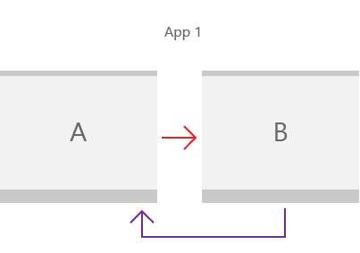

Implement navigation between two pages
Learn how to use a frame and pages to enable basic peer-to-peer navigation in your app.

Almost every app requires navigation between pages. Even a simple app with a single content page will typically have a settings page that requires navigation. In this article, we walk through the basics of adding a XAML Page to your app, and using a Frame to navigate between pages.
- Applies to: Windows App SDK/WinUI3
- Important APIs: Microsoft.UI.Xaml.Controls.Frame class, Microsoft.UI.Xaml.Controls.Page class, Microsoft.UI.Xaml.Navigation namespace
Note
For navigation in UWP apps, see App navigation (UWP)
1. Create a blank app
To create a blank app in Visual Studio:
- To set up your development computer, see Start developing Windows apps.
- From the Microsoft Visual Studio start window, select Create a new project, OR, on the Visual Studio menu, choose File > New > Project.
- In the Create a new project dialog's drop-down filters, select C# or C++, Windows, and WinUI, respectively.
- Select the Blank App, Packaged (WinUI 3 in Desktop) project template, and click Next. That template creates a desktop app with a WinUI 3-based user interface.
- In the Project name box, enter
BasicNavigation, and click Create. - To run the program, choose Debug > Start Debugging from the menu, or press F5. Build and run your solution on your development computer to confirm that the app runs without errors. A blank page is displayed.
- To stop debugging and return to Visual Studio, exit the app, or click Stop Debugging from the menu.
- Remove any example code that's included in the template from the
MainWindow.xamlandMainWindowcode-behind files.
2. Use a Frame to navigate between pages
When your app has multiple pages, you use a Frame to navigate between them. The Frame class supports various navigation methods such as Navigate, GoBack, and GoForward, and properties such as BackStack, ForwardStack, and BackStackDepth.
When you create a new Windows App SDK project in Visual Studio, the project template creates a MainWindow class (of type Microsoft.UI.Xaml.Window). However, it doesn't create a Frame or Page and doesn't provide any navigation code.
To enable navigation between pages, add a Frame as the root element of MainWindow. You can do that in the Application.OnLaunched method override in the App.xaml code-behind file. Open the App code-behind file, update the OnLaunched override, and handle the NavigationFailed event as shown here.
// App.xaml.cs
protected override void OnLaunched(Microsoft.UI.Xaml.LaunchActivatedEventArgs args)
{
m_window = new MainWindow();
// Create a Frame to act as the navigation context and navigate to the first page
Frame rootFrame = new Frame();
rootFrame.NavigationFailed += OnNavigationFailed;
// Navigate to the first page, configuring the new page
// by passing required information as a navigation parameter
rootFrame.Navigate(typeof(MainPage), args.Arguments);
// Place the frame in the current Window
m_window.Content = rootFrame;
// Ensure the MainWindow is active
m_window.Activate();
}
void OnNavigationFailed(object sender, NavigationFailedEventArgs e)
{
throw new Exception("Failed to load Page " + e.SourcePageType.FullName);
}
// App.xaml.h
// Add after OnLaunched declaration.
void OnNavigationFailed(IInspectable const&, Microsoft::UI::Xaml::Navigation::NavigationFailedEventArgs const&);
///////////////
// App.xaml.cpp
void App::OnLaunched(LaunchActivatedEventArgs const& e)
{
window = make<MainWindow>();
Frame rootFrame = Frame();
rootFrame.NavigationFailed({ this, &App::OnNavigationFailed });
rootFrame.Navigate(xaml_typename<BasicNavigation::MainPage>(), box_value(e.Arguments()));
window.Content(rootFrame);
window.Activate();
}
void App::OnNavigationFailed(IInspectable const&, NavigationFailedEventArgs const& e)
{
throw hresult_error(E_FAIL, hstring(L"Failed to load Page ") + e.SourcePageType().Name);
}
Note
For apps with more complex navigation, you will typically use a NavigationView as the root of MainWindow, and place a Frame as the content of the navigation view. For more info, see Navigation view.
The Navigate method is used to display content in this Frame. Here, MainPage.xaml is passed to the Navigate method, so the method loads MainPage in the Frame.
If the navigation to the app's initial window fails, a NavigationFailed event occurs, and this code throws an exception in the event handler.
3. Add basic pages
The Blank App template doesn't create multiple app pages for you. Before you can navigate between pages, you need to add some pages to your app.
To add a new item to your app:
- In Solution Explorer, right-click the
BasicNavigationproject node to open the context menu. - Choose Add > New Item from the context menu.
- In the Add New Item dialog box, select the WinUI node in the left pane, then choose Blank Page (WinUI 3) in the middle pane.
- In the Name box, enter
MainPageand press the Add button. - Repeat steps 1-4 to add the second page, but in the Name box, enter
Page2.
Now, these files should be listed as part of your BasicNavigation project.
| C# | C++ |
|---|---|
|
|
Important
For C++ projects, you must add a #include directive in the header file of each page that references another page. For the inter-page navigation example presented here, MainPage.xaml.h file contains #include "Page2.xaml.h", in turn, Page2.xaml.h contains #include "MainPage.xaml.h".
C++ page templates also include an example Button and click handler code that you will need to remove from the XAML and code-behind files for the page.
Add content to the pages
In MainPage.xaml, replace the existing page content with the following content:
<Grid>
<TextBlock x:Name="pageTitle" Text="Main Page"
Margin="16" Style="{StaticResource TitleTextBlockStyle}"/>
<HyperlinkButton Content="Click to go to page 2"
Click="HyperlinkButton_Click"
HorizontalAlignment="Center"/>
</Grid>
This XAML adds:
- A TextBlock element named
pageTitlewith its Text property set toMain Pageas a child element of the root Grid. - A HyperlinkButton element that is used to navigate to the next page as a child element of the root Grid.
In the MainPage code-behind file, add the following code to handle the Click event of the HyperlinkButton you added to enable navigation to Page2.xaml.
// MainPage.xaml.cs
private void HyperlinkButton_Click(object sender, RoutedEventArgs e)
{
Frame.Navigate(typeof(Page2));
}
// pch.h
// Add this include in pch.h to support winrt::xaml_typename
#include <winrt/Windows.UI.Xaml.Interop.h>
////////////////////
// MainPage.xaml.h
void HyperlinkButton_Click(winrt::Windows::Foundation::IInspectable const& sender, winrt::Microsoft::UI::Xaml::RoutedEventArgs const& e);
////////////////////
// MainPage.xaml.cpp
void winrt::BasicNavigation::implementation::MainPage::HyperlinkButton_Click(winrt::Windows::Foundation::IInspectable const& sender, winrt::Microsoft::UI::Xaml::RoutedEventArgs const& e)
{
Frame().Navigate(winrt::xaml_typename<BasicNavigation::Page2>());
}
MainPage is a subclass of the Page class. The Page class has a read-only Frame property that gets the Frame containing the Page. When the Click event handler of the HyperlinkButton in MainPage calls Frame.Navigate(typeof(Page2)), the Frame displays the content of Page2.xaml.
Whenever a page is loaded into the frame, that page is added as a PageStackEntry to the BackStack or ForwardStack of the Frame, allowing for history and backwards navigation.
Now, do the same in Page2.xaml. Replace the existing page content with the following content:
<Grid>
<TextBlock x:Name="pageTitle" Text="Page 2"
Margin="16" Style="{StaticResource TitleTextBlockStyle}"/>
<HyperlinkButton Content="Click to go to main page"
Click="HyperlinkButton_Click"
HorizontalAlignment="Center"/>
</Grid>
In the Page2 code-behind file, add the following code to handle the Click event of the HyperlinkButton to navigate to MainPage.xaml.
// Page2.xaml.cs
private void HyperlinkButton_Click(object sender, RoutedEventArgs e)
{
Frame.Navigate(typeof(MainPage));
}
// Page2.xaml.h
void HyperlinkButton_Click(winrt::Windows::Foundation::IInspectable const& sender, winrt::Microsoft::UI::Xaml::RoutedEventArgs const& e);
/////////////////
// Page2.xaml.cpp
void winrt::BasicNavigation::implementation::Page2::HyperlinkButton_Click(winrt::Windows::Foundation::IInspectable const& sender, winrt::Microsoft::UI::Xaml::RoutedEventArgs const& e)
{
Frame().Navigate(winrt::xaml_typename<BasicNavigation::MainPage>());
}
Build and run the app. Click the link that says "Click to go to page 2". The second page that says "Page 2" at the top should be loaded and displayed in the frame. Now click the link on Page 2 to go back to Main Page.
4. Pass information between pages
Your app now navigates between two pages, but it really doesn't do anything interesting yet. Often, when an app has multiple pages, the pages need to share information. Now you'll pass some information from the first page to the second page.
In MainPage.xaml, replace the HyperlinkButton you added earlier with the following StackPanel. This adds a TextBlock label and a TextBox name for entering a text string.
<StackPanel VerticalAlignment="Center">
<TextBlock HorizontalAlignment="Center" Text="Enter your name"/>
<TextBox HorizontalAlignment="Center" Width="200" x:Name="name"/>
<HyperlinkButton Content="Click to go to page 2"
Click="HyperlinkButton_Click"
HorizontalAlignment="Center"/>
</StackPanel>
Now you'll use the second overload of the Navigate method and pass the text from the text box as the second parameter. Here's the signature of this Navigate overload:
public bool Navigate(System.Type sourcePageType, object parameter);
bool Navigate(TypeName const& sourcePageType, IInspectable const& parameter);
In the HyperlinkButton_Click event handler of the MainPage code-behind file, add a second parameter to the Navigate method that references the Text property of the name text box.
// MainPage.xaml.cs
private void HyperlinkButton_Click(object sender, RoutedEventArgs e)
{
Frame.Navigate(typeof(Page2), name.Text);
}
// MainPage.xaml.cpp
void winrt::BasicNavigation::implementation::MainPage::HyperlinkButton_Click(winrt::Windows::Foundation::IInspectable const& sender, winrt::Microsoft::UI::Xaml::RoutedEventArgs const& e)
{
Frame().Navigate(xaml_typename<BasicNavigation::Page2>(), winrt::box_value(name().Text()));
}
In Page2.xaml, replace the HyperlinkButton you added earlier with the following StackPanel. This adds a TextBlock for displaying the text string passed from MainPage.
<StackPanel VerticalAlignment="Center">
<TextBlock HorizontalAlignment="Center" x:Name="greeting"/>
<HyperlinkButton Content="Click to go to page 1"
Click="HyperlinkButton_Click"
HorizontalAlignment="Center"/>
</StackPanel>
In the Page2 code-behind file, add the following code to override the OnNavigatedTo method:
// Page2.xaml.cs
protected override void OnNavigatedTo(NavigationEventArgs e)
{
if (e.Parameter is string && !string.IsNullOrWhiteSpace((string)e.Parameter))
{
greeting.Text = $"Hello, {e.Parameter.ToString()}";
}
else
{
greeting.Text = "Hello!";
}
base.OnNavigatedTo(e);
}
// Page2.xaml.h
void Page2::OnNavigatedTo(Microsoft::UI::Xaml::Navigation::NavigationEventArgs const& e)
{
auto propertyValue{ e.Parameter().as<Windows::Foundation::IPropertyValue>() };
if (propertyValue.Type() == Windows::Foundation::PropertyType::String)
{
auto name{ winrt::unbox_value<winrt::hstring>(e.Parameter()) };
if (!name.empty())
{
greeting().Text(L"Hello, " + name);
__super::OnNavigatedTo(e);
return;
}
}
greeting().Text(L"Hello!");
__super::OnNavigatedTo(e);
}
Run the app, type your name in the text box, and then click the link that says Click to go to page 2.
When the Click event of the HyperlinkButton in MainPage calls Frame.Navigate(typeof(Page2), name.Text), the name.Text property is passed to Page2, and the value from the event data is used for the message displayed on the page.
5. Cache a page
Page content and state is not cached by default, so if you'd like to cache information, you must enable it in each page of your app.
In our basic peer-to-peer example, when you click the Click to go to page 1 link on Page2, the TextBox (and any other field) on MainPage is set to its default state. One way to work around this is to use the NavigationCacheMode property to specify that a page be added to the frame's page cache.
By default, a new page instance is created with its default values every time navigation occurs. In MainPage.xaml, set NavigationCacheMode to Enabled (in the opening Page tag) to cache the page and retain all content and state values for the page until the page cache for the frame is exceeded. Set NavigationCacheMode to Required if you want to ignore CacheSize limits, which specify the number of pages in the navigation history that can be cached for the frame. However, keep in mind that cache size limits might be crucial, depending on the memory limits of a device.
<Page
x:Class="BasicNavigation.MainPage"
...
mc:Ignorable="d"
NavigationCacheMode="Enabled">
Now, when you click back to main page, the name you entered in the text box is still there.
6. Customize page transition animations
By default, each page is animated into the frame when navigation occurs. The default animation is an "entrance" animation that causes the page to slide up from the bottom of the window. However, you can choose different animation options that better suit the navigation of your app. For example, you can use a "drill in" animation to give the feeling that the user is going deeper into your app, or a horizontal slide animation to give the feeling that two pages are peers. For more info, see Page transitions.
These animations are represented by sub-classes of NavigationTransitionInfo. To specify the animation to use for a page transition, you'll use the third overload of the Navigate method and pass a NavigationTransitionInfo sub-class as the third parameter (infoOverride). Here's the signature of this Navigate overload:
public bool Navigate(System.Type sourcePageType,
object parameter,
NavigationTransitionInfo infoOverride);
bool Navigate(TypeName const& sourcePageType,
IInspectable const& parameter,
NavigationTransitionInfo const& infoOverride);
In the HyperlinkButton_Click event handler of the MainPage code-behind file, add a third parameter to the Navigate method that sets the infoOverride parameter to a SlideNavigationTransitionInfo with its Effect property set to FromRight.
// MainPage.xaml.cs
private void HyperlinkButton_Click(object sender, RoutedEventArgs e)
{
Frame.Navigate(typeof(Page2),
name.Text,
new SlideNavigationTransitionInfo()
{ Effect = SlideNavigationTransitionEffect.FromRight});
}
// pch.h
#include <winrt/Microsoft.UI.Xaml.Media.Animation.h>
////////////////////
// MainPage.xaml.cpp
using namespace winrt::Microsoft::UI::Xaml::Media::Animation;
// ...
void winrt::BasicNavigation::implementation::MainPage::HyperlinkButton_Click(winrt::Windows::Foundation::IInspectable const& sender, winrt::Microsoft::UI::Xaml::RoutedEventArgs const& e)
{
// Create the slide transition and set the transition effect to FromRight.
SlideNavigationTransitionInfo slideEffect = SlideNavigationTransitionInfo();
slideEffect.Effect(SlideNavigationTransitionEffect(SlideNavigationTransitionEffect::FromRight));
Frame().Navigate(winrt::xaml_typename<BasicNavigation::Page2>(),
winrt::box_value(name().Text()),
slideEffect);
}
In the HyperlinkButton_Click event handler of the Page2 code-behind file, set the infoOverride parameter to a SlideNavigationTransitionInfo with its Effect property set to FromLeft.
// Page2.xaml.cs
private void HyperlinkButton_Click(object sender, RoutedEventArgs e)
{
Frame.Navigate(typeof(MainPage),
null,
new SlideNavigationTransitionInfo()
{ Effect = SlideNavigationTransitionEffect.FromLeft});
}
// Page2.xaml.cpp
using namespace winrt::Microsoft::UI::Xaml::Media::Animation;
// ...
void winrt::BasicNavigation::implementation::MainPage::HyperlinkButton_Click(winrt::Windows::Foundation::IInspectable const& sender, winrt::Microsoft::UI::Xaml::RoutedEventArgs const& e)
{
// Create the slide transition and set the transition effect to FromLeft.
SlideNavigationTransitionInfo slideEffect = SlideNavigationTransitionInfo();
slideEffect.Effect(SlideNavigationTransitionEffect(SlideNavigationTransitionEffect::FromLeft));
Frame().Navigate(winrt::xaml_typename<BasicNavigation::MainPage>(),
nullptr,
slideEffect);
}
Now, when you navigate between pages, the pages slide left and right, which provides a more natural feeling for this transition and reinforces the connection between the pages.